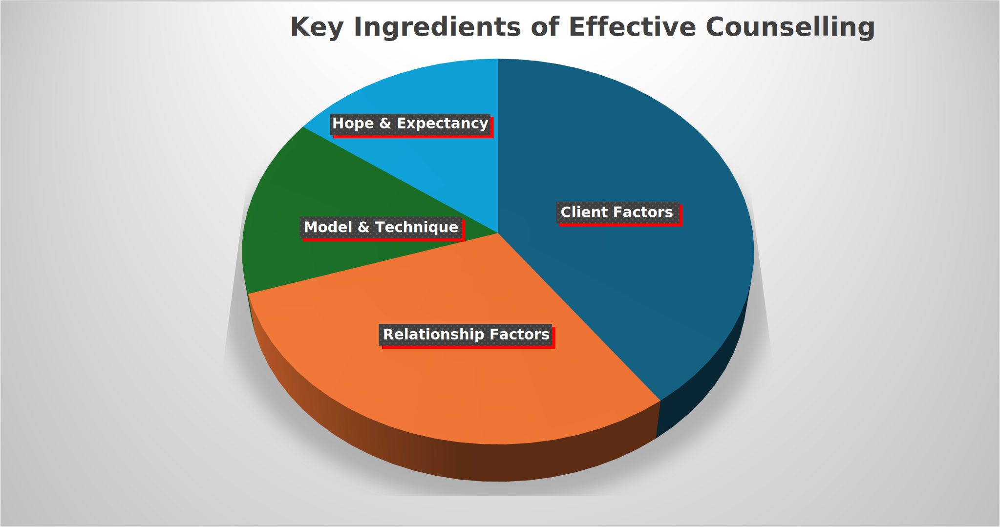

HPY210: Applied Counselling Skills (Introductory)
Week 1: Introduction and Research Methods in Adult Development Pt 1
Lecture 1: Introduction to Counselling
How is Counselling Defined?
Professional Organisations
“Professional counselling is a safe and confidential collaboration between qualified counsellors and clients to promote mental health and wellbeing, enhance self-understanding, and resolve identified concerns. Clients are active participants in the counselling process at every stage”
Counselling is a professional relationship that empowers diverse individuals, families, and groups to accomplish mental health, wellness, education, and career goals.
Counselling and psychotherapy are umbrella terms that cover a range of talking therapies. They are delivered by trained practitioners who work with people over a short or long term to help them bring about effective change or enhance their wellbeing.
Textbooks
“…a principled relationship characterised by the application of one or more psychological theories and a recognised set of communication skills, modified by experience, intuition and other interpersonal factors, to clients’ intimate concerns, problems or aspirations.”
“Counselling is an intimate form of learning, and it demands a practitioner who is willing to be an authentic person in the therapeutic relationship. It is within the context of such a person-to-person connection that the client experiences growth.”
“Counselling is [an] intensive and personal process…[it is] about listening to and understanding a client’s life challenges and developing strategies for change and growth.”
Key Components of Effective Counselling
| Concept | Description |
|---|---|
| Relationship | The relationship is built on trust, empathy, privacy and respect, and it allows the client to feel heard and understood. |
| Client-centredness | Counselling is a purposeful endeavour that arises from and serves the client’s intentions, priorities, needs, hopes and goals. |
| Understanding and Change | Counselling stimulates capacity for understanding and fosters learning of skills/strategies for pursuit of personal goals or mental wellbeing. |
| Skilful (and qualified) use of techniques | Effective counselling relies on the mastery of a set of skills and approaches. Accreditation organisations monitor competencies for professional counsellors. |
Key Ingredients of Effective Counselling

Professional Counselling vs. Counselling Skills
- Professional Counselling is :
- Conducted by Psychologists, counsellors, psychotherapists, social workers, psychiatrists.
- Uses a therapeutic approach to promote personal development or enhance mental wellbeing.
- Delivered over a number of sessions (short-term or long-term), each session has limited duration (usually 50 mins).
- Counselling Skills are:
- Used in a variety of careers, such as people-focused healthcare professionals, coaches, trainers/facilitators, supervisors, managers, tutors and presenters.
- Aims at enhancing personal development within a particular domain (current employment or group).
- Delivered more casually on an ad-hoc basis.
Counselling Skills vs. Communication/Interpersonal Skills
- Counselling Skills involve:
- Attentive listening
- Responding to and focusing on the client’s interests.
- Confidentiality
- Application of microskills
- Goal-focused
Comparison Between Counselling and Coaching
- Counselling:
- Awareness.
- Assistance with problems or dysfunction.
- Getting back to ‘normal’ functioning.
- Has tended until recently to be problem focussed.
- Coaching:
- Awareness;
- Skill development;
- Going beyond current capabilities;
- Building strengths; Often outcome-focussed;
- Business and sport focus, and within training organisations;
- Health
- Similarities identified (between coaching &
counselling):
- Listening
- Questioning
- Non-judgemental (a ‘safe’ space)
- The process of uncovering (although what was uncovered differed)
- Differences identified:
- Focus and intention (coaching aimed at movement toward desired outcomes; present-future orientated; realising potential)
- Client base (coaching aimed at business, but can venture beyond).
“Coaching [is] a human development process that involves structured, focused interaction and the use of appropriate strategies, tools and techniques to promote desirable and sustainable change…”
How Can Counselling Help?
- Insight: gaining understanding of the origins and development of one’s difficulties and self-defeating patterns.
- Awareness: the process of noticing and experiencing one’s thoughts, feelings, and behaviours in real time.
- Self-acceptance: development of a positive attitude towards self.
- Relating with others: ability to form and maintain satisfying relationships with others.
- Problem-solving: a cognitive and behavioural process of finding solutions to problems and includes a series of steps.
- Psychoeducation: a collaborative process of information-giving and skills-building to promote changes in thoughts, feelings and behaviours.
- Cognitive change: a process of modifying or restructuring the thought patterns and core beliefs underlying psychological distress.
- Behaviour change: empowering individuals to adopt positive practices
- Distress reduction
- tolerance and emotion regulation
“Feelings, emotions, and moods constitute a river that continually runs through us – peaceful, meandering, turbulent, or raging, often beneficial, sometimes dangerousm seldom neutral”.
“To change in therapy, clients cannot just talk intellectually about themselves and their feelings, they need to viscerally experience what they talk about…”
Working With Feelings
- According to Greenberg (2010) there are three categories or
strategies when working with feelings:
- Building awareness through research; putting feelings into words helps decrease amygdala arousal (Lieberman et al 2004).
- Expressing feelings: Feelings are elicited and tolerated in the session; using body awareness to help clients get in touch with their feelings.
- Reflection and regulation.
Lecture 2: When and Why Do People Change?

Extending the Model

Case Study
- Joe drinks approx. 10 standard drinks each day.
- He has been given an ultimatum by his partner: either deal with the alcohol problem or she will leave.
- He has also had several friends who have stopped spending time with him because he ‘acts like a fool’ when he is intoxicated.
- His GP has also told him that his liver functioning has significantly decreased and is at ‘a concerning level’.
With all of this in mind, we might expect Joe to sit in this area, outlined in red, when considering his motivation to change:

- But the factors influencing an individual’s motivation to change can themselves change over time.
- For example, perhaps Joe, after joining a support group and gaining some skills and awareness for dealing with his underlying issues, gets excited about his growth and his future.
- Then perhaps his motivation profile might look like this:

Compulsory Reading
The Basic Features of Counselling Relationships
Process 1: Counselling
There are 6 stages in the Counselling process:
- Developing Trust and Engagement
- Exploring the Problem
- Helping Clients Set Their Own Goals
- Empowering Into Action
- Helping to Maintain Change
- Ending Counselling
1. Developing Trust and Engagement
- Trust and engagement are essential for effective
counselling relationships and stages.
- A client’s sense of being understood is crucial;
without it, counselling is ineffective.
- Building the counselling relationship is a core
skill, as clients often arrive feeling anxious and negative.
- Counsellors must foster trust to help clients feel:
- Heard and understood
- Comfortable sharing their thoughts
- Willing to return for future sessions
- Heard and understood
- Counsellors also experience self-doubt, especially
when new, including concerns like:
- Am I helping effectively?
- Am I talking too much or too little?
- What does the client think of me?
- Am I helping effectively?
- Trust is built through key counselling skills,
including:
- Active listening and engagement
- Respect, allowing space for the client to
talk
- Emotional reflection and clarification
- Silence, when appropriate
- Non-verbal cues, such as nods and posture
- Summarising and confirming understanding
- Clarifying goals and session structure
- Providing information about counselling
processes
- Reviewing progress and planning future sessions
- Active listening and engagement
- The most fundamental qualities (essential for
positive change in a client) for a counsellor are:
- Warmth:
- Clients need to perceive counsellors as open, friendly, and
approachable.
- This is conveyed through open communication, both
verbally and through body language (smiling, eye
contact, open posture).
- Modelling openness encourages clients to
communicate in the same way.
- Warm greetings with genuine tone and expression
help set a welcoming atmosphere.
- Warmth is both a mindset and a skill, rooted in
mutual learning and respect.
- Building relationships fosters client empowerment and helps counsellors improve their ability to support others.
- Clients need to perceive counsellors as open, friendly, and
approachable.
- Empathy:
- Empathy, as defined by Carl Rogers, is the ability
to understand another person’s world “as if” it were
one’s own, without losing that distinction.
- It differs from sympathy, which involves offering
emotional support, whereas empathy focuses on understanding and
sharing the client’s experience without judgment.
- Key aspects of empathy in counselling:
- Reflection of content: Checking understanding by
summarising what the client has said.
- Reflection of feelings: Recognising and verbalising
the underlying emotions behind a client’s words.
- Reflection of content: Checking understanding by
summarising what the client has said.
- Empathy involves not just listening to words but also paying attention to tone of voice, body language, and emotions to fully understand the client’s experience.
- Empathy, as defined by Carl Rogers, is the ability
to understand another person’s world “as if” it were
one’s own, without losing that distinction.
- Genuineness:
- Genuineness is essential for clients to feel safe
and empowered.
- Clients need to perceive counsellors as authentic,
genuinely wanting to help and respect them as unique individuals.
- Communicating acceptance from the start fosters a
supportive environment for change.
- Like warmth, genuineness is a choice in how we
relate to others.
- Genuineness is essential for clients to feel safe
and empowered.
- Warmth:
- Other key aspects of helping:
- Concreteness: Encouraging clients to be
specific.
- Immediacy: Focusing on the present rather than the
past or future.
- Challenge: Highlighting discrepancies in a client’s self-perception or worldview.
- Concreteness: Encouraging clients to be
specific.
2. Exploring the Problem
- Clarifying the Problem:
- Clients often feel confused; counselling helps identify the
true problem or range of issues.
- Understanding key details: what, when, where, with whom,
duration, intensity, and time period.
- Identifying related or underlying problems that may contribute to the issue.
- Clients often feel confused; counselling helps identify the
true problem or range of issues.
- Key Areas of Exploration:
- Thoughts: What internal dialogue is shaping the
client’s perspective?
- Feelings: What emotions are present, and how do
they impact behavior?
- Behavior: How does the client act in and outside of
sessions?
- Body: Are there physical symptoms related to
emotional distress?
- Unconscious elements: Are past experiences
influencing current issues?
- Spiritual elements: Could there be a deeper meaning
to the situation?
- Life events: External circumstances affecting the
client’s experience.
- Life stages: Transitions like marriage, parenthood,
or retirement may be sources of stress.
- External pressures: Financial issues, family expectations, or workplace constraints.
- Thoughts: What internal dialogue is shaping the
client’s perspective?
- Skills Used in Exploration:
- Questioning, listening, and linking to uncover
patterns and themes.
- Providing information to normalize experiences and
offer guidance.
- Deeper empathy by recognizing unspoken emotions and
re-framing issues.
- Encouraging deeper self-reflection by identifying themes and prompting conclusions.
- Questioning, listening, and linking to uncover
patterns and themes.
- Challenging the Client When Needed:
- Addressing self-defeating beliefs and negative
self-talk.
- Expressing discomfort or confusion to encourage
reflection.
- Engaging in mutual reflection on dynamics within the session.
- Addressing self-defeating beliefs and negative
self-talk.
- Moving Forward:
- Once a new perspective is gained, clients must ask, “What
now?”
- The next step is goal-setting to create a path for progress.
- Once a new perspective is gained, clients must ask, “What
now?”
3. Helping Clients Set Their Own Goals
- Clarifying and Agreeing on Goals:
- Clients need help distinguishing between realistic
vs. unrealistic and self-enhancing
vs. self-defeating goals.
- Goals should be:
- Specific and clear.
- Measurable and verifiable.
- Adequate to meet the problem.
- Realistic and achievable.
- Timed with a clear action plan.
- In the client’s control.
- Aligned with the client’s values.
- Clients need help distinguishing between realistic
vs. unrealistic and self-enhancing
vs. self-defeating goals.
- Overcoming Mental Barriers:
- TINA: (“There is no alternative”) clients may feel
stuck, believing there is only one unachievable solution.
- TAAA: (“There are always alternatives”) counselling helps clients explore different solutions.
- TINA: (“There is no alternative”) clients may feel
stuck, believing there is only one unachievable solution.
- Setting Medium and Short Term Goals:
- Medium-term goals: Defined by what the client
wants to achieve in a year (e.g., “I will feel more
confident at work”).
- Short-term goals: Breaking medium term goals into smaller, specific actions (e.g., “Reduce arguments with my son by half in two weeks”).
- Medium-term goals: Defined by what the client
wants to achieve in a year (e.g., “I will feel more
confident at work”).
- Goal-Setting Process:
- Clarify medium-term objectives.
- Choose one goal to work on first.
- Make it specific and actionable.
- Clarify medium-term objectives.
- Key Skills Used in This Stage:
- Asking questions.
- Summarizing discussions.
- Brainstorming alternatives.
- Offering suggestions as prompts.
- Weighing pros and cons of different options.
4. Empowering Into Action
- Moving from Goal-Setting to Action:
- Setting goals creates hope, but action requires practical
steps.
- Clients need a structured action plan with
achievable sub-goals.
- Example: If a goal is to say no to extra requests twice a week, the first step might be “only doing what I have already agreed to.”
- Setting goals creates hope, but action requires practical
steps.
- Planning for Success:
- Create detailed, realistic strategies that consider
both opportunities and pitfalls.
- Strategies are about testing ideas—if they don’t work, it’s not failure but valuable learning.
- Create detailed, realistic strategies that consider
both opportunities and pitfalls.
- Ongoing Evaluation:
- Clients assess what worked and what didn’t.
- If successful → move to the next action step or a new problem.
- If unsuccessful → adjust strategies to avoid previous obstacles.
- Clients assess what worked and what didn’t.
- Key Skills in the Action Phase:
- Brainstorming alternatives.
- Appraising different options.
- Strategy planning for implementation.
- Weighing pros and cons of actions.
- Evaluating success and making adjustments.
- Brainstorming alternatives.
5. Helping to Maintain Change
- Change is difficult and requires ongoing support.
- Two key factors for maintaining progress:
- Support Systems:
- Clients need continued support after taking action.
- Counsellor support is helpful, but building personal support networks is crucial.
- Developing New Skills:
- Clients may need different skills for long-term maintenance than those used for initial change.
- Motivation may decline over time, so they need strategies to stay committed.
- Support Systems:
6. Ending Counselling
- Ideal Ending:
- Counselling concludes when clients have achieved their goals, taken action, and maintained changes.
- Challenges in Ending Counselling:
- Clients may feel dependent on the counsellor.
- New goals or problems may arise, making closure difficult.
- Some clients may relapse or develop issues to
maintain the relationship.
- Counsellors themselves may struggle with letting go.
- Clients may feel dependent on the counsellor.
- Supervision Role:
- These challenges should be addressed in supervision to ensure a healthy ending for both client and counsellor.
Summary: The Six Stages of the Counselling Process
| Process of Counselling | Cycle of Change | Process of Maintaining Change |
|---|---|---|
| Stage 1: Developing trust and engagement, including ‘presence’ and empowerment through relationship change | Pre-contemplation | Anticipating and preventing problems |
| Stage 2: Exploring the problem | Contemplation | Stopping the triggering of a return to problematic behaviour |
| Stage 3: Goal-setting | Preparation | Monitoring and analysing high-risk situations |
| Stage 4: Empowering action | Action | Teaching coping responses |
| Stage 5: Maintaining the change | Maintenance | Stopping a lapse become a relapse |
| Stage 6: Ending counselling | Termination or lapse or relapse | Dealing with helplessness; reducing expectations of old patterns of thinking and behaving |
- The six stages are:
- Fluid and Cyclical:
- Stages are not strictly linear; multiple stages may
occur in a single session.
- The action phase often brings up new information,
leading to further exploration and goal revision.
- Stages are not strictly linear; multiple stages may
occur in a single session.
- Content vs. Process:
- Clients control the content (what is
discussed).
- Counsellors guide the process, ensuring structure
and a safe environment for exploration and progress.
- Clients control the content (what is
discussed).
- This framework provides a structured yet flexible approach to counselling, helping clients navigate their challenges effectively.
- Fluid and Cyclical:
Process 2: Change
- The Cycle or Process of Change model (Prochaska
& DiClemente, 1983) describes how individuals progress through
six stages of change:
- Pre-contemplation – Unaware of or unconcerned about
the problem.
- Contemplation – Recognizing the problem and
considering change.
- Preparation – Making a serious commitment to
change.
- Action – Implementing new behaviors and practicing
skills.
- Maintenance – Sustaining change and integrating it
into daily life.
- Termination/Lapse/Relapse – Either successfully
adopting the new behavior or experiencing setbacks.
- Pre-contemplation – Unaware of or unconcerned about
the problem.
- Key Takeaways:
- Change is cyclical, not linear – relapse is common,
and people may re-enter the cycle at different points.
- Motivation fluctuates – individuals may struggle
with ambivalence about change.
- Different stages require different counselling
techniques.
- Readiness, importance, and confidence are crucial
for successful change.
- Change is cyclical, not linear – relapse is common,
and people may re-enter the cycle at different points.
- Relation to the Six-Stage Counselling Model:
- The Cycle of Change describes the client’s
journey, while the Six-Stage Counselling Model
outlines the counsellor’s role in guiding the
process.
- Both models complement each other, offering a structured yet flexible approach to facilitating lasting change.
- The Cycle of Change describes the client’s
journey, while the Six-Stage Counselling Model
outlines the counsellor’s role in guiding the
process.
Process 3: Maintaining Change
Maintaining change is difficult, and clients often feel insecure about their ability to sustain progress. Lapses may occur early if motivation and ambivalence were not fully addressed, or later if clients struggle to implement their intentions.
- Key Strategies for Preventing Relapse:
- Anticipating problems early – Discuss potential
relapse triggers and solutions.
- Using the “cliff metaphor” –
- Railings prevent lapses (strategies for avoiding
high-risk situations).
- Parachutes help clients recover if they do lapse
(coping strategies).
- Railings prevent lapses (strategies for avoiding
high-risk situations).
- Identifying high-risk situations – Helping clients
recognize seemingly small decisions that could lead to relapse.
- Challenging helplessness – Developing coping skills
and reducing unrealistic expectations about past behaviors.
- Reframing lapses as learning experiences – Avoiding
an “all-or-nothing” mindset where a small slip leads to full
relapse.
- Helping clients recognize early warning signs and
build resilience.
- Anticipating problems early – Discuss potential
relapse triggers and solutions.
- Even with preparation, some clients will relapse. Counsellors must manage their own negative feelings and support clients in viewing relapse as an opportunity to learn, not as failure.